Komponenten: wer macht wasComponents: who does what
Die Trennung ist die wichtigste Entscheidung der Architektur: rag_engine.py kennt keine HTTP-Anfragen, server.py kennt keine Vektoren. Deshalb konnte Lab 08 die Suche ohne Server messen, und deshalb kann der Server Eingaben prüfen, bevor irgendein Modell läuft. Der LLM-Client ist derselbe für LM Studio und OpenAI; nur das Profil unterscheidet sich. Klicken Sie im Werkzeug jede Komponente an: Jede hat eine Aufgabe und ein „Darf nie“.
The separation is the most important decision of the architecture: rag_engine.py knows no HTTP requests, server.py knows no vectors. That is why lab 08 could measure retrieval without the server, and why the server can check inputs before any model runs. The LLM client is the same for LM Studio and OpenAI; only the profile differs. Click every component in the tool: each has a task and a “must never”.
| KomponenteComponent | DateiFile | AufgabeTask |
|---|---|---|
| GUI | index.html | Anbieterauswahl, Suchverfahren, Streaming und Quelltexte; maskiert alle Modell- und NutzertexteProvider selection, search method, streaming and source texts; escapes all model and user text |
| Web-App | server.py | Validierung, Retrieval-Aufruf, Kontextbudget, Antwortformat, SSE, Schutz-HeaderValidation, retrieval call, context budget, answer format, SSE, protective headers |
| ModellzugangModel access | llm_client.py | Ein OpenAI-kompatibler Client, getrennte Profile für local und openaiOne OpenAI-compatible client, separate profiles for local and openai |
| Hybrid-RAG | rag_engine.py | Chunking, Embeddings, Index, Fehlercode-Lookup, Reranking, FingerprintChunking, embeddings, index, error-code lookup, reranking, fingerprint |
| SitzungsschlüsselSession keys | session_keys.py | API-Schlüssel je Sitzung im Arbeitsspeicher, acht StundenAPI key per session in memory, eight hours |
| PDF-Parser | parser.py | Docling-Export mit Seitenmarkern (Lab 03)Docling export with page markers (lab 03) |
| PageIndex | pageindex_engine.py | Vektorlose Abschnittsauswahl durch das Sprachmodell, experimentellVectorless section selection by the language model, experimental |


Eine Anfrage von Anfang bis EndeOne request from start to finish
Die API hat acht Routen. Die Oberfläche braucht drei davon: GET /api/modes beim Laden (Verfahren, Sitzungsstatus, CSRF-Token), POST /api/openai_key nur bei Cloud-Betrieb und POST /api/ask_stream für jede Frage. POST /api/ask liefert dieselbe Antwort ohne Streaming; die Kommandozeile lokale_ki.py und die Tests benutzen sie.
The API has eight routes. The interface needs three of them: GET /api/modes on load (methods, session status, CSRF token), POST /api/openai_key only for cloud operation and POST /api/ask_stream for every question. POST /api/ask delivers the same answer without streaming; the command line lokale_ki.py and the tests use it.
| RouteRoute | FunktionFunction | Antwort bei FehlerResponse on error |
|---|---|---|
GET / | BenutzeroberflächeUser interface | – |
GET /api/health | Prozess erreichbar; keine ModellprüfungProcess reachable; no model check | – |
GET /api/modes | Verfahren, Sitzungsstatus, CSRF-TokenMethods, session status, CSRF token | – |
POST /api/openai_key | Schlüssel für diese Sitzung setzen oder entfernenSet or remove the key for this session | 403 ohne gültigen CSRF-Token, 400 bei ungültigem Schlüssel403 without valid CSRF token, 400 for an invalid key |
POST /api/ask | Vollständige JSON-AntwortComplete JSON answer | 400 bei ungültiger Eingabe, 503 ohne Schlüssel oder bei Modellfehler; im Stream event: error400 for invalid input, 503 without key or on model error; in the stream event: error |
POST /api/ask_stream | SSE über fetch mit POST (Lab 07)SSE via fetch with POST (lab 07) | |
GET /mobile/…, GET /siemens-logo.png, GET /assets/qrcode.min.js | Nur ausdrücklich freigegebene statische DateienOnly explicitly released static files | 404 |
Die Reihenfolge innerhalb einer Anfrage folgt einer Regel: Jeder billige Schritt steht vor jedem teuren. Erst before_request (Loopback, Origin – kostet nichts), dann validate() (Länge 2000 Zeichen, Modus, Anbieter, Schlüssel), dann das Retrieval (eine Sekunde Embedding und Reranker), dann erst das Sprachmodell (21,5 Sekunden mit gemma-4-12b auf dem Mac; eine Ablehnung ohne Modell dauert 1,4 Sekunden). Der Body ist auf 16 KiB begrenzt, bevor Flask ihn überhaupt liest; eine Frage mit 50 000 Zeichen kommt gar nicht bis zur Validierung.
The order within a request follows one rule: every cheap step precedes every expensive one. First before_request (loopback, origin – costs nothing), then validate() (length 2,000 characters, mode, provider, key), then retrieval (one second of embedding and reranker), only then the language model (21.5 seconds with gemma-4-12b on the Mac; a refusal without model takes 1.4 seconds). The body is limited to 16 KiB before Flask even reads it; a question with 50,000 characters never reaches validation.
{"frage": "Was bedeutet E:18?", "mode": "hybrid", "provider": "local"}
Index und FingerprintIndex and fingerprint
Die 346 Chunks mit ihren Vektoren liegen als JSON in storage/: 3,0 MB Vektorspeicher, 364 KB Chunk-Texte, zusammen 3,4 MB. Kein Datenbankserver, keine Cloud; LlamaIndex lädt die Dateien in den Prozess. Für ein Handbuch reicht das. Die Dokumentation nennt pgvector, Qdrant und Chroma als Wege für mehr Dokumente und sagt dazu, dass keines installiert ist.
The 346 chunks with their vectors lie as JSON in storage/: 3.0 MB of vector store, 364 KB of chunk texts, 3.4 MB in total. No database server, no cloud; LlamaIndex loads the files into the process. For one manual that suffices. The documentation names pgvector, Qdrant and Chroma as paths for more documents and says that none is installed.
Der gefährliche Fall ist ein alter Index, der still weiterlebt: Wer das Embedding-Modell wechselt oder die Präfixe einführt und den alten Index behält, vergleicht Fragenvektoren aus dem neuen Modell mit Chunk-Vektoren aus dem alten – die Suche liefert Unsinn, ohne Fehlermeldung. Genau das war der erste Fehler der Baseline (Lab 05). Seitdem bindet compute_cache_key den Index an alles, wovon er abhängt: den Inhalt der Markdown-Datei (114 695 Bytes), den Modellnamen, die Parser-Version und die Chunk-Parameter. SHA-256 macht daraus 64 Hexadezimalzeichen; der Wert in storage/.cache_key lautet heute:
The dangerous case is an old index that quietly lives on: whoever switches the embedding model or introduces the prefixes and keeps the old index compares question vectors from the new model with chunk vectors from the old one – retrieval delivers nonsense, without an error message. That was exactly the first bug of the baseline (lab 05). Since then compute_cache_key binds the index to everything it depends on: the content of the Markdown file (114,695 bytes), the model name, the parser version and the chunk parameters. SHA-256 turns that into 64 hexadecimal characters; the value in storage/.cache_key today reads:
882619029fc3436327d4f122760f824018cdf79498aaddc832b152b525f93007
Das Skript tools/betrieb.py dieses Labs rechnet den Wert mit hashlib.sha256 nach und erhält denselben. Mit multilingual-e5-base statt -small beginnt der Hash mit 023b8f5e9fa5…; ein einziges Leerzeichen mehr im Handbuch ergibt fd8a931ef0d3…. Es gibt keine Ähnlichkeit zwischen den Werten – das ist die Eigenschaft einer kryptografischen Hashfunktion, und hier ist sie erwünscht: gleich oder verschieden, nichts dazwischen.
This lab's script tools/betrieb.py recomputes the value with hashlib.sha256 and gets the same one. With multilingual-e5-base instead of -small the hash starts with 023b8f5e9fa5…; a single extra space in the manual yields fd8a931ef0d3…. There is no similarity between the values – that is the property of a cryptographic hash function, and here it is desired: equal or different, nothing in between.


build_or_load_index in rag_engine.py: Der Fingerprint entscheidet, der FileLock (Zeitlimit 600 Sekunden) verhindert, dass Server und Messlauf gleichzeitig bauen.build_or_load_index in rag_engine.py: the fingerprint decides, the FileLock (timeout 600 seconds) prevents server and evaluation run from building at the same time.JSONDecodeError ab. Ursache: Der Modellcache lag im Projektordner, der Projektordner wird über OneDrive synchronisiert, und die Snapshot-Symlinks des Hugging-Face-Caches kamen als leere Dateien an – modules.json, Tokenizer, Gewichte. Seitdem liegen die Modelle im Benutzer-Cache (~/.cache/huggingface/hub, über HF_HOME konfigurierbar). Modell-Caches und virtuelle Umgebungen sind keine Projektdateien.
On the Mac retrieval aborted with JSONDecodeError. Cause: the model cache lay in the project folder, the project folder is synchronised via OneDrive, and the snapshot symlinks of the Hugging Face cache arrived as empty files – modules.json, tokenizer, weights. Since then the models live in the user cache (~/.cache/huggingface/hub, configurable via HF_HOME). Model caches and virtual environments are not project files.
Der Schlüssel: nur im ArbeitsspeicherThe key: in memory only
Ein OpenAI-Schlüssel ist Geld: Wer ihn hat, kann auf fremde Rechnung Anfragen stellen. Das Fallbeispiel behandelt ihn deshalb wie ein Passwort, das nie gespeichert wird. Die Oberfläche nimmt ihn in einem Passwortfeld entgegen, schickt ihn einmal an POST /api/openai_key und leert das Feld. Der Server legt ihn in SessionKeys ab – ein Python-Dictionary hinter einem Lock, nichts weiter. Kein Cookie, kein localStorage, keine Datei, keine Umgebungsvariable enthält ihn. Nach 8 Stunden verfällt er; „Entfernen“ oder ein Neustart des Servers löschen ihn sofort. Der OpenAI-Client wird je Anfrage erzeugt und danach geschlossen.
An OpenAI key is money: whoever has it can make requests on someone else's bill. The case study therefore treats it like a password that is never stored. The interface accepts it in a password field, sends it once to POST /api/openai_key and clears the field. The server puts it into SessionKeys – a Python dictionary behind a lock, nothing more. No cookie, no localStorage, no file, no environment variable contains it. After 8 hours it expires; “remove” or a server restart deletes it immediately. The OpenAI client is created per request and closed afterwards.
- InhaltContentZufällige Sitzungs-ID
sidund CSRF-Tokencsrf, beide 32 Bytes aussecrets.token_urlsafe; signiert mit einem Serverschlüssel, der bei jedem Start neu erzeugt wird.Random session IDsidand CSRF tokencsrf, both 32 bytes fromsecrets.token_urlsafe; signed with a server secret regenerated at every start. HttpOnlyJavaScript im Browser kann das Cookie nicht lesen – auch nicht eingeschleustes.JavaScript in the browser cannot read the cookie – injected script included.SameSite=StrictDer Browser schickt das Cookie nur mit, wenn die Anfrage von derselben Site ausgeht; ein Formular auf einer fremden Seite kommt ohne Sitzung an.The browser sends the cookie only when the request originates from the same site; a form on a foreign page arrives without a session.X-CSRF-TokenDie Schlüssel-Route verlangt das Token zusätzlich als Header und vergleicht mitsecrets.compare_digest(konstante Zeit). Zwei Schlösser für die eine Route, die Geld bewegt.The key route additionally demands the token as a header and compares withsecrets.compare_digest(constant time). Two locks for the one route that moves money.
Authorization des OpenAI-Clients ein; Antworten und Fehlerprotokolle geben weder Schlüssel noch vollständige Anbieter-Exceptions aus.The key must never enter the prompt. The case study only puts it into the HTTP header Authorization of the OpenAI client; answers and error logs output neither the key nor complete provider exceptions.Loopback, Origin und Schutz-HeaderLoopback, origin and protective headers
Der Server hört auf 127.0.0.1:3001 und prüft trotzdem jede Anfrage in before_request: Ist die Absenderadresse eine Loopback-Adresse (ipaddress.ip_address(...).is_loopback, ohne X-Forwarded-For zu vertrauen)? Stimmt ein mitgeschickter Origin-Header mit der eigenen Adresse überein? Meldet der Browser Sec-Fetch-Site: cross-site? Jede Abweichung ergibt 403. Das schützt vor dem klassischen Angriff auf lokale Dienste: Eine fremde Webseite im selben Browser ruft http://127.0.0.1:3001/api/ask auf – die Adresse ist ja erreichbar. Der Browser setzt den Origin-Header der fremden Seite, und der Server lehnt ab.
The server listens on 127.0.0.1:3001 and still checks every request in before_request: is the sender address a loopback address (ipaddress.ip_address(...).is_loopback, without trusting X-Forwarded-For)? Does a supplied Origin header match the server's own address? Does the browser report Sec-Fetch-Site: cross-site? Any deviation yields 403. That protects against the classic attack on local services: a foreign web page in the same browser calls http://127.0.0.1:3001/api/ask – the address is reachable, after all. The browser sets the Origin header of the foreign page, and the server refuses.
| Header | WertValue | WirkungEffect |
|---|---|---|
Cache-Control | no-store | Keine Antwort landet im Browser- oder Proxy-CacheNo response ends up in a browser or proxy cache |
X-Content-Type-Options | nosniff | Der Browser rät keinen anderen InhaltstypThe browser does not guess another content type |
Referrer-Policy | no-referrer | Keine lokale URL wandert in fremde LogsNo local URL travels into foreign logs |
X-Frame-Options | DENY | Die Oberfläche lässt sich nicht in fremde Seiten einbetten (Clickjacking)The interface cannot be embedded in foreign pages (clickjacking) |
Content-Security-Policy | default-src 'self'; script-src 'self' 'unsafe-inline'; style-src 'self' 'unsafe-inline'; img-src 'self' data:; connect-src 'self'; object-src 'none'; base-uri 'none'; frame-ancestors 'none'; form-action 'self' | Skripte, Stile, Bilder und Verbindungen nur von der eigenen Adresse; keine Plugins, keine Einbettung, Formulare nur an sich selbstScripts, styles, images and connections only from its own address; no plugins, no embedding, forms only to itself |
Ehrlich gelesen hat die CSP eine Lücke: script-src 'self' 'unsafe-inline' erlaubt Inline-Skripte, weil index.html sein Skript inline trägt. Gegen eingeschleustes Skript schützt deshalb nicht die CSP, sondern die Maskierung: Die Oberfläche setzt Modell- und Nutzertexte mit textContent, nie mit innerHTML. Eine strengere CSP mit Nonces wäre der nächste Schritt; die Dokumentation orientiert sich an der Flask-Sicherheitsdoku und sagt, was sie umsetzt und was nicht.
Read honestly, the CSP has a gap: script-src 'self' 'unsafe-inline' allows inline scripts because index.html carries its script inline. Against injected script it is therefore not the CSP that protects but the escaping: the interface sets model and user text with textContent, never with innerHTML. A stricter CSP with nonces would be the next step; the documentation follows the Flask security docs and says what it implements and what not.
Kosten: Cloud gegen lokalCost: cloud versus local
Die Tokenzahlen stammen aus dem Live-Protokoll vom 19.09.2026 mit gpt-4.1-mini; das Modell meldet sie selbst (usage). Sie umfassen nur die Antwortgenerierung, nicht das Embedding und nicht den Reranker – die laufen lokal und kostenlos.
The token counts come from the live log of 19 Sept 2026 with gpt-4.1-mini; the model reports them itself (usage). They cover only the answer generation, not the embedding and not the reranker – those run locally and free of charge.
| FrageQuestion | ModusMode | Tokens Eingang / AusgangTokens in / out |
|---|---|---|
| Wie reinige ich die Laugenpumpe? Welche Sicherheitsmaßnahmen sind vorher nötig?How do I clean the drain pump? Which safety measures are needed first? | Hybrid | 646/375 |
| Fehler E:18Error E:18 | Hybrid | 355/121 |
| Fehler E:23Error E:23 | Hybrid | 341/107 |
| Was bedeutet der Fehler E:23?What does error E:23 mean? | PageIndex | 1227/102 |
Mit der E:18-Frage als Muster (355 Eingabe-, 121 Ausgabetokens) und den Standardpreisen von gpt-4.1-mini (0,40 USD je Million Eingabe-, 1,60 USD je Million Ausgabetokens, OpenAI-Preisliste, abgerufen am 19.09.2026) kostet eine Antwort 0,034 Cent. 200 Anfragen am Tag sind 2,01 USD im Monat. Ein lokaler Rechner für 2 500 USD über 48 Monate plus 5 USD Strom kostet 57,08 USD im Monat – das 28-Fache. Gleich teuer wären beide erst bei rund 5 670 Anfragen am Tag. Die Rechnung sagt: Wer lokal betreibt, tut es nicht wegen der Kosten, sondern weil Frage und Handbuchauszüge den Rechner nicht verlassen – oder weil kein Anbieter erreichbar sein soll. Alle Felder des Rechners sind editierbar; PageIndex mit 1 227 Eingabetokens je Frage verdreifacht den Cloud-Betrag. With the E:18 question as pattern (355 input, 121 output tokens) and the standard prices of gpt-4.1-mini (USD 0.40 per million input, USD 1.60 per million output tokens, OpenAI price list, retrieved 19 Sept 2026) one answer costs 0.034 cents. 200 requests a day are USD 2.01 a month. A local machine for USD 2,500 over 48 months plus USD 5 of electricity costs USD 57.08 a month – 28 times as much. Both would cost the same only at roughly 5,670 requests a day. The calculation says: whoever runs locally does not do so because of cost but because question and manual excerpts never leave the machine – or because no provider is supposed to be reachable. All fields of the calculator are editable; PageIndex with 1,227 input tokens per question triples the cloud amount.
Was lokal nötig ist, sagt die LM-Studio-Dokumentation (Stand 19.09.2026): Apple Silicon mit macOS 14 oder neuer und mindestens 16 GB RAM empfohlen; unter Windows x64 mit AVX2, 16 GB RAM und 4 GB Grafikspeicher empfohlen. Das Modell des Fallbeispiels, gemma-4-12b-it in 6-Bit-Quantisierung, belegt rund 10 GB; der Rechner der Prüfung war ein Mac mit Apple Silicon, und eine Antwort dauerte dort 21,5 Sekunden. What is needed locally, the LM Studio documentation says (as of 19 Sept 2026): Apple Silicon with macOS 14 or newer and at least 16 GB of RAM recommended; on Windows x64 with AVX2, 16 GB of RAM and 4 GB of graphics memory recommended. The case study's model, gemma-4-12b-it in 6-bit quantisation, occupies about 10 GB; the machine of the audit was a Mac with Apple Silicon, and one answer took 21.5 seconds there.
Grenzen, die die Dokumentation selbst nenntLimits the documentation names itself
- Ein Benutzer, ein Prozess. Keine Anmeldung, kein gehärteter Mehrbenutzerbetrieb; die Sitzungsschlüssel leben im Speicher eines einzigen Prozesses. Ein zweiter Worker hätte sie nicht.One user, one process. No login, no hardened multi-user operation; the session keys live in the memory of a single process. A second worker would not have them.
- Keine Folgefragen. Jede Frage steht allein; es gibt keinen Chatverlauf. „Und was kostet das?“ nach einer E:18-Antwort findet nichts.No follow-up questions. Every question stands alone; there is no chat history. “And what does that cost?” after an E:18 answer finds nothing.
- Nur lokal erreichbar. Ein QR-Link mit
localhostfunktioniert auf keinem anderen Gerät. Deshalb gibt es eine statische Leseseite auf GitHub Pages: Die Antwort wird komprimiert in das URL-Fragment gepackt, das der Browser nicht an den Server sendet; die Seite ruft keine API auf. Wer den Link hat, kann lesen – das ist Weitergabe, kein Zugriffsschutz.Reachable locally only. A QR link withlocalhostworks on no other device. Hence a static reading page on GitHub Pages: the answer is compressed into the URL fragment, which the browser does not send to the server; the page calls no API. Whoever has the link can read – that is sharing, not access control. - Kleiner Testbestand, Stichwort-Proxys (Lab 08) und OCR-Reste im Markdown (Lab 03).Small test set, keyword proxies (lab 08) and OCR remnants in the Markdown (lab 03).
ÜbungenExercises
Fünf Übungen: Komponenten befragen, Bedrohungen Maßnahmen zuordnen, die Fingerprint-Signatur vervollständigen, die Cloud-Kosten rechnen und eine Anfrage in Reihenfolge bringen.Five exercises: question the components, assign threats to countermeasures, complete the fingerprint signature, compute the cloud cost and put one request in order.
ZusammenfassungSummary
- Suche und Server sind getrennt; deshalb ist die Suche messbar und der Server prüfbar.Retrieval and server are separated; hence retrieval is measurable and the server checkable.
- In einer Anfrage steht jeder billige Schritt vor jedem teuren: Loopback, Validierung, Retrieval, Modell.In one request every cheap step precedes every expensive one: loopback, validation, retrieval, model.
- Der SHA-256-Fingerprint bindet den Index an Quelle, Modell, Parser-Version und Parameter; ein alter Index kann nie still weiterleben.The SHA-256 fingerprint binds the index to source, model, parser version and parameters; an old index can never quietly live on.
- Der API-Schlüssel liegt nur im Arbeitsspeicher, acht Stunden; das Cookie trägt nur Sitzungs-ID und CSRF-Token, HttpOnly und SameSite=Strict.The API key lives only in memory, eight hours; the cookie carries only session ID and CSRF token, HttpOnly and SameSite=Strict.
- Loopback-, Origin- und Sec-Fetch-Site-Prüfung schließen fremde Webseiten aus; die Schutz-Header ergänzen die Maskierung, ersetzen sie aber nicht.Loopback, Origin and Sec-Fetch-Site checks exclude foreign web pages; the protective headers complement the escaping but do not replace it.
- Bei 200 Anfragen am Tag ist die Cloud rund 28-mal günstiger; lokal wird mit Datenhoheit begründet, nicht mit Geld.At 200 requests a day the cloud is about 28 times cheaper; local is justified by data sovereignty, not by money.
QuellenSources
- Pallets Projects: Flask Documentation – Security Considerations. flask.palletsprojects.com/en/stable/web-security/ (abgerufenretrieved 19.09.2026)
- OWASP Cheat Sheet Series: Cross-Site Request Forgery Prevention Cheat Sheet. cheatsheetseries.owasp.org (19.09.2026)
- MDN Web Docs: Content Security Policy (CSP); Sec-Fetch-Site; Origin; Using HTTP cookies. developer.mozilla.org/…/CSP, …/Sec-Fetch-Site, …/Origin, …/Cookies (19.09.2026)
- Python Software Foundation: hashlib – Secure hashes and message digests. docs.python.org/3/library/hashlib.html; filelock – platform-independent file locking. py-filelock.readthedocs.io (19.09.2026)
- LM Studio: System Requirements. lmstudio.ai/docs/app/system-requirements (19.09.2026)
- OpenAI: API Pricing, gpt-4.1-mini Standard (0,40 / 1,60 USD je 1 Mio. Tokens). openai.com/api/pricing (abgerufenretrieved 19.09.2026; Preise ändern sich, Datum beachtenprices change, mind the date)
- Fallbeispiel:
server.py(create_app, before_request, after_request, validate, SSE),session_keys.py,rag_engine.py(compute_cache_key, build_or_load_index),storage/.cache_key,docs/TECHNICAL.md(Architektur, Routen, Konfiguration, Schutz des API-Schlüssels, Grenzen),docs/evaluation/LIVE.md(Tokenzahlen) undMAC-LIVE.md(Cache-Fehler, Laufzeiten), Stand 19.09.2026; Nachrechnung indata/betrieb.jsonübertools/betrieb.py.Case study:server.py(create_app, before_request, after_request, validate, SSE),session_keys.py,rag_engine.py(compute_cache_key, build_or_load_index),storage/.cache_key,docs/TECHNICAL.md(architecture, routes, configuration, key protection, limits),docs/evaluation/LIVE.md(token counts) andMAC-LIVE.md(cache error, run times), as of 19 Sept 2026; recomputation indata/betrieb.jsonviatools/betrieb.py.